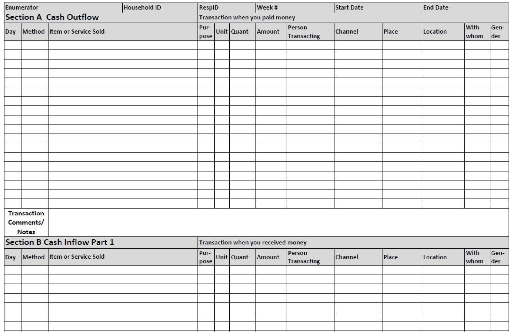
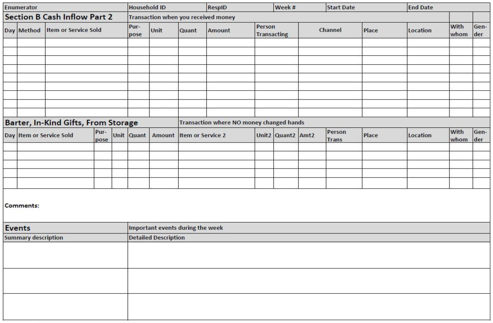

In this activity, you and a partner will explore microdata from the 2014-15 Zambian Financial Diaries Project. The objectives of this exercise are to:
One student should open this link to the data catalog while the other logs into https://vm-manage.oit.duke.edu/containers. After entering your NetID, click on the link to “RStudio” to begin your R session.
Click on “File” and choose “New File” and “R Notebook”. Change the title to “Portfolios of the Poor”.
Click “Preview”. You will be prompted to save the file. Make a new folder for this class and name the file “portfolios”. When you save, your browser might prompt you to allow pop-ups from RStudio.
options(scipen=999)
# roster data
download.file("https://www.dropbox.com/s/d6jmzglw1hwt68c/roster.RData?dl=1",
"roster.rData")
load("roster.rData")
# panel data
download.file("https://www.dropbox.com/s/6ab2nyuotsabgfj/panel.RData?dl=1",
"panel.rData")
load("panel.rData")
# events data
download.file("https://www.dropbox.com/s/kkn1hola3uock7j/events.RData?dl=1",
"events.rData")
load("events.rData")
# transactions data
download.file("https://www.dropbox.com/s/6axdbi2h7s3kgto/trans.RData?dl=1",
"trans.rData")
load("trans.rData")
# cross section data
download.file("https://www.dropbox.com/s/ckv4cgouu5x2yi6/xsection.RData?dl=1",
"xsection.rData")
load("xsection.rData")If successful, you will see five dataframes in the Environment tab. Check out the “Data Description” section of the data catalog entry (not in RStudio) and the User’s Guide to understand each data source.
Click on roster data frame in the Environment. To make sense of the 33 variables in this data frame, find the correct data dictionary in the data catalog and review the enrollment questionnaire.
Make a histogram of the age of people enrolled in the study. Remember to type this code inside of a R code chunk.
library(ggplot2)
ggplot(roster, aes(roster_age)) +
geom_histogram() +
theme_minimal() +
labs(title = "Mean age of enrolled study participants at baseline",
subtitle = "Zambian Financial Diaries Project") +
xlab("Age") +
geom_vline(xintercept=mean(roster$roster_age),
linetype="dotted",
color="red") +
annotate("text",
x=mean(roster$roster_age), y=30,
label=paste0("Mean age = ", round(mean(roster$roster_age), 1)),
hjust = 0)# counts
table(roster$roster_finserv_1)
# proportions
table(roster$roster_finserv_1)/nrow(roster)What percentage of respondents said they have a bank account? To answer this question, you need to replace roster_finserv_1 with the correct variable name.
What do most people in the sample do for a living?
Front: 
Back: 
tidyverse package: install.packages("tidyverse")# load tidyverse library
library(tidyverse)
# summarize by gender
panel %>%
# limit to non-dependents
filter(panel_livelihood != "Dependent") %>%
# group by gender and calculate mean
group_by(panel_gender) %>%
summarise(mean_inflow_earned = mean(panel_inflow_earned))# summarize by province
panel %>%
group_by(panel_region) %>%
summarise(mean_inflow_earned = mean(panel_inflow_earned))# make a new variable that is inflows minus outflows (in USD)
panel$diffUSD <- (panel$panel_inflow_all-panel$panel_outflow_all)/9.5
panel %>%
filter(panel_livelihood == "Micro-Retail Businesses") %>%
ggplot(., aes(x=Week, y=diffUSD)) +
geom_line() +
facet_wrap(~HHID)balance and visually scan the inflows and outflows for the largest losses over the time series. Can you find anything to help explain why expenses were larger than income? person <- "" # enter the ID between the quotes
x <- panel[panel$HHID==person, ]
View(x) panel %>%
group_by(Week, panel_livelihood) %>%
mutate(mean_savingsdeposit = mean(panel_savingsdeposit)) %>%
ggplot(., aes(x=Week, y=mean_savingsdeposit)) +
geom_line() + facet_wrap(~panel_livelihood) +
theme_minimal() +
labs(title = "Mean weekly savings by livelihood type",
subtitle = "Zambian Financial Diaries Project") +
xlab("Weeks") +
ylab("Average Savings Amount")code1 to code4. Excluding day-to-day events, what was the most common type of event? table(events$events_code1)
table(events$events_code2)
table(events$events_code3)
table(events$events_code4)
# excluding day to day
table(events$events_code3[events$events_code4!="Day-to-Day Expenses"])